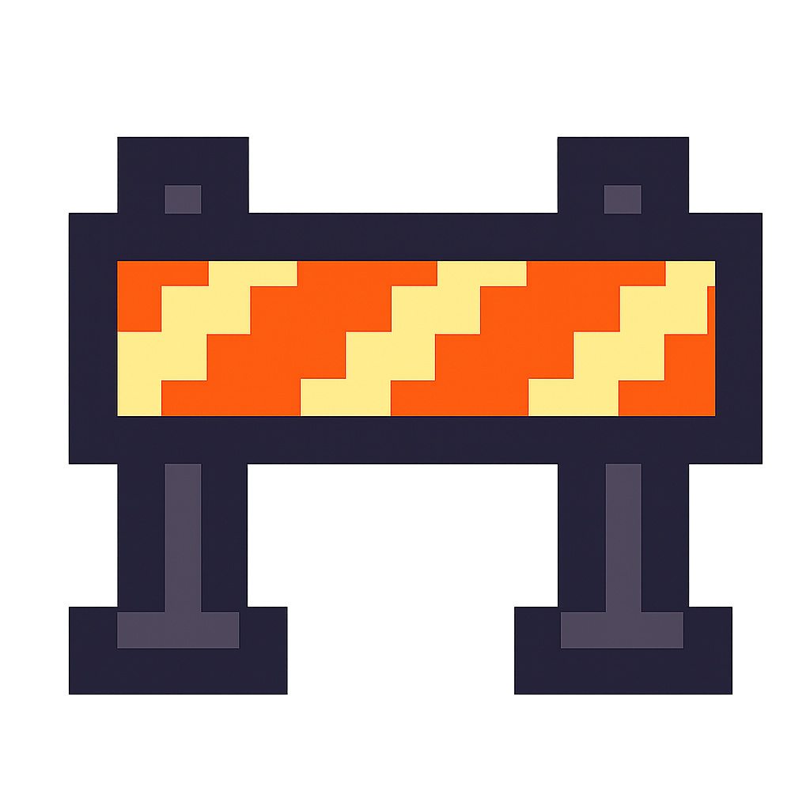

Embedded Radar System (Under Construction)

What it is
An interrupt-driven embedded system on an ESP32 that performs real-time distance scanning using an ultrasonic sensor mounted on a servo motor. The system sweeps a 180° field of view, samples distance at precise intervals, and renders a live radar-style visualization on an SSD1306 OLED. Distance data can also be streamed over WiFi to a lightweight web dashboard for monitoring and analysis.
Highlights
- Interrupt-timed ultrasonic distance capture (echo pulse measured in ISR)
- Servo-based 180° sweep with synchronized sampling at fixed angular increments
- Real-time radar visualization on SSD1306 OLED (angle + distance plotted live)
- Optional WiFi telemetry to a simple web dashboard (remote viewing + debugging)
How it works
- Sensor acquisition (interrupt-driven): Trigger pulse → ISR timestamps echo pulse width → distance computed via time-of-flight and pushed into a circular buffer.
- Servo sweep control: A timed control loop steps the servo across 180°; each step triggers a synchronized sample to produce angle-distance pairs.
- Display + telemetry: Samples render in real-time on the OLED; optionally broadcast over WiFi to a small web dashboard.
Concurrency model
- High priority: Sensor task (process ISR events, compute distance, buffer samples)
- Medium priority: Control task (servo timing + sweep scheduling)
- Low priority: UI task (OLED rendering)
- Low priority: Network task (optional HTTP telemetry)
Goal: deterministic sampling with minimal jitter, avoiding blocking delays by separating time-critical capture from rendering and networking.
Key technical targets
- Sampling frequency: ~200 Hz per sweep (target)
- ISR latency: < 10 µs (target)
- Buffering: circular buffer architecture (lock-free handoff from ISR/task)
- End-to-end measurement latency: ~1–2 ms (target)
- Validation: verify timing/interrupt precision with logic analyzer (planned)